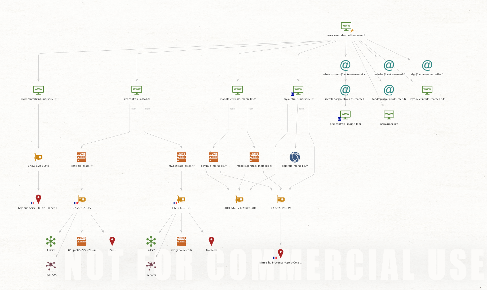

L'Open Source INTelligence
- MON
- 2023-2024
- temps 2
- Investigation
- OSINT
- Débutant
- Renseignement
- ORY Victor
Résumé :
Dans ce MON, je souhaite explorer les outils phares de la discipline, en commençant par les bases qui semblent primordiales :
- La méthode classique;
- Les moteurs de recherche;
- Les réseaux sociaux.
Un point important pour plonger vraiment dans cette discipline est de comprendre les motivations qui la sous-tendent. Le livre de Bellingcat illustre bien cela en se penchant sur l'histoire de Bellingcat, le média le plus important organisé autour de l'OSINT. Il met en lumière le fait que l'OSINT est avant tout du renseignement, non seulement pour espionner votre ex, mais surtout un ensemble de méthodes permettant de collecter des informations, nécessitant ensuite une analyse approfondie.
Ressources :
- SubReddit comme toujours --> Pour comprendre la discipline
- OZINT
Livre :
- A Tradecraft Primer: Structured Analytic Techniques for Improving Intelligence Analysis (US Government 2009)
- Psychology of Intelligence Analysis (Richards J. Heuer)
- Intelligence: From Secrets to Policy (Mark M. Lowenthal)
- Critical Thinking for Strategic Intelligence (Pherson & Pherson) --> En cours de lecture, focalisé sur la manière de mener une analyse de renseignement pour un cadre professionnel.
- Cases in Intelligence Analysis: Structured Analytic Techniques in Action (Beebe & Pherson) --> Livre centré autour de la pratique, intéressant, mais nécessite un vrai investissement --> possible POK
- OSINT techniques: Resources for Uncovering online information, Michael Bazzel (Bibliothèque de M.Brucker) --> Liste de méthodes et de logiciels d'OSINT.
Lecture OSINT Technique 15/12:
Premièrement, un accent est mis sur l'importance de l'environnement de travail pour rester anonyme. Ensuite, un chapitre est dédié aux moteurs de recherche, connu sous le nom de googlint. On peut trouver des challenges associés à cette pratique sur le site OZINT. Après une poursuite de la lecture de ce livre, il semble que cela soit identique à une page qui regroupe tous les outils, ce qui n'est pas vraiment intéressant, des répertoires Github le font aussi.
Maltego tutorial 23/12:
J'ai suivi cette playlist pour prendre en main le logiciel Maltego. Après les bases (très basiques mais nécessaires) et un peu de pratique comme la production de ce graphique concernant Centrale Marseille:

C'était un peu intéressant, mais pour le moment, cela semble réservé à un usage professionnel surtout. Par conséquent, j'ai choisi de regarder ce tutoriel from photo to passport parce que j'avais besoin de faire quelque chose de concret, un exercice.
Donc, j'ai eu le plaisir d'apprendre des ficelles intéressantes avec cette vidéo. Toutefois, elle se focalise sur les personnes importantes car cela peut être à destination de journalistes d'investigation. En faisant des recherches sur ma personne, j'ai retrouvé assez facilement des informations (une micro-entreprise Uber que j'avais créée il y a 4 ans). Toutefois, l'outil ne fait pas tout, un travail supplémentaire est nécessaire pour vérifier chaque donnée.
Ozint entraînement:
Pour faire un peu de pratiques simples, j'ai réalisé 4-5 challenges, essentiellement basés sur la recherche Google augmentée et la manipulation des données topographiques, des avis Google, et de nombreuses petites sources d'information. Je n'ai pas eu besoin d'utiliser de logiciels, mais cela permet de voir le potentiel de cette discipline rien qu'avec la base.
Pour des usages spécifiques, il existe des milliers d'outils, répertoriés notamment dans ce répertoire.
Lecture Critical Thinking and Intelligence Analysis:
Les livres proposés en bibliographie se répartissent en différentes catégories :
- Ceux centrés autour des techniques, avec presque une liste de méthodes et de logiciels --> Comment trouver l'information ?
- D'autres centrés autour des méthodes de renseignement d'un point de vue plus général --> Quoi faire de l'information ?
Ainsi, ces deux types de sources sont complémentaires, mais cela interroge l'utilité d'étudier l'OSINT : qui ? pourquoi ?
En tout cas, ce livre s'adresse à des professionnels du renseignement pour lesquels l'information et son analyse sont le cœur de métier. L'objectif est d'apprendre à structurer son analyse d'information et son argumentation en conséquence en y incorporant de l'OSINT. Pour les plus motivés qui liront l'intégralité de ce livre, il y a 6 cas pratiques, ce qui le distingue de beaucoup de livres. Nos travaux se résument parfois à chercher les travaux déjà faits en lien avec le domaine étudié et à reformuler ce qu'on trouve sur internet. Ce livre propose de casser cette dynamique.
Voici un des cas pratiques :
Review Case Study III, “Blackout on the Eastern Seaboard!”
-
Quelles sont les questions clés qu'un décideur politique posera probablement aux responsables de l'infrastructure énergétique et de la sécurité nationale lors de l'élaboration de sa première réponse publique à la panne de courant ?
-
Quelles sont les questions clés que ceux chargés de rétablir l'alimentation poseront ?
-
Formulez des questions "essentielles" et "fondamentales" et assurez-vous que les réponses satisfont aux cinq caractéristiques d'une bonne question.
-
Comment utiliseriez-vous la stratégie des 5 W et H pour identifier la question clé pour un décideur politique :
- Qui ?
- Quoi ?
- Comment ?
- Quand ?
- Où ?
- Pourquoi ?
-
Comment organiseriez-vous un article sur les implications de la panne de courant en utilisant la Méthode des Questions ?
Conclusion :
En explorant le vaste domaine de l'OSINT, ce MON m'a offert un aperçu des outils, des méthodes et des ressources essentiels pour ceux qui débutent dans cette discipline. De la méthode classique aux moteurs de recherche en passant par les réseaux sociaux. Il a même été utile dans les recherches du quotidien.
La découverte des motivations derrière l'OSINT, illustrée par le livre captivant de Bellingcat, souligne que cette discipline va bien au-delà de l'espionnage personnel. C'est un moyen structuré de collecter des informations, nécessitant ensuite une analyse méticuleuse pour obtenir des résultats significatifs.
Les ressources recommandées, allant des communautés en ligne comme le SubReddit OSINT aux ouvrages spécialisés, offrent une pléthore d'informations pour ceux qui souhaitent approfondir leurs connaissances. Les tutoriels pratiques sur des outils tels que Maltego ajoutent une dimension concrète à l'apprentissage, bien que l'accent soit mis sur l'importance d'une vérification minutieuse des données.
Les challenges d'entraînement dans le domaine de l'OSINT ont démontré le potentiel de cette discipline, même avec des méthodes de base telles que la recherche Google augmentée. L'existence de milliers d'outils spécifiques, répertoriés dans des répertoires comme celui de jivoi, souligne la diversité des applications possibles.